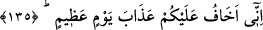
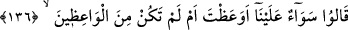
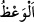
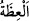
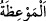
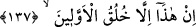
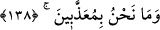

135. Doğrusu sizin hakkınızda muazzam bir günün azâbından endişe ediyorum.
“Doğrusu” bu nîmetlerin şükrünü yerine getirmezseniz, dünyada ve âhirette “sizin
hakkınızda muazzam bir günün azâbından endişe ediyorum.” Çünkü nimeti inkâr
etmek azâbı getirir. Nitekim nimete şükür nimetin artmasını gerektirir.
Günün “muazzam” olarak vasfedilmesi, o günde inen azâbın dehşet ve büyüklüğünden
dolayıdır. O azab ise burada dondurucu/uğultulu bir rüzgarın esmesidir.
136. (Onlar) şöyle dediler: Sen öğüt versen de, vermesen de bizce birdir.
Âd kavmi Hûd (a.s.)’a cevap olarak “şöyle dediler: Sen öğüt versen de, vermesen de
bizce birdir.” Bize göre aynıdır. Biz asla bulunduğumuz halden dönmeyeceğiz.
“
” korkutma ile birlikte yapılan bir zorlama/yasaklama/îkaz, va’d ve vaîdi
zikrederek kalbi yumuşatan bir sözdür.
Halîl der ki: “
” kalbi rikkate getiren/incelten konularda hayır öğütte bulunmaktır.
“
” ve “
” öğüt, nasihat ve vaaz mânâsında isimdir.”
137. Bu, öncekilerin geleneğinden başka bir şey değildir.
“Bu” senin bize getirdiğin “öncekilerin geleneğinden” evvelkilerin huy ve
âdetlerinden “başka bir şey değildir.” Onlar, “Biz peygamberleriz” derlerdi; halbuki
yalan söylüyorlardı. Onlar bunun gibi yalanları uydururlar ve yazarlardı. Ya da bizim şu
halimiz, bizden öncekilerin yüksek binalar dikmek, büyüklenerek zorbalık yapmak gibi
âdetlerinden başka bir şey değildir. Dolayısıyla biz bu âdetimizi senin sözünle terk
etmeyiz. Yâhut onların âdeti ve işi, yaşadıkları kadar yaşayacaklarını, sonra
öleceklerini, yeniden diriltilme ve hesap olmayacağını iddia etmekten ibâretti.
138. Biz azâba uğratılacak da değiliz.
“Biz” yapmakta olduğumuz amellerden ve âdetlerden dolayı “azaba uğratılacak da